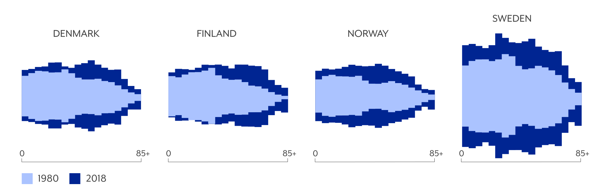
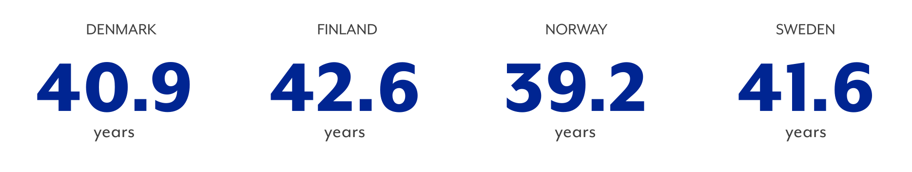
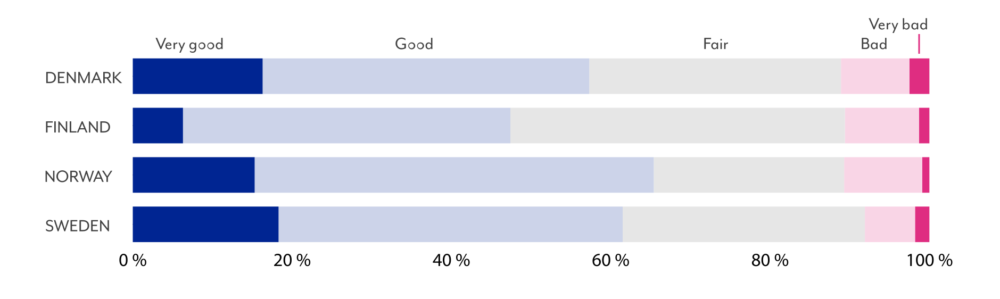
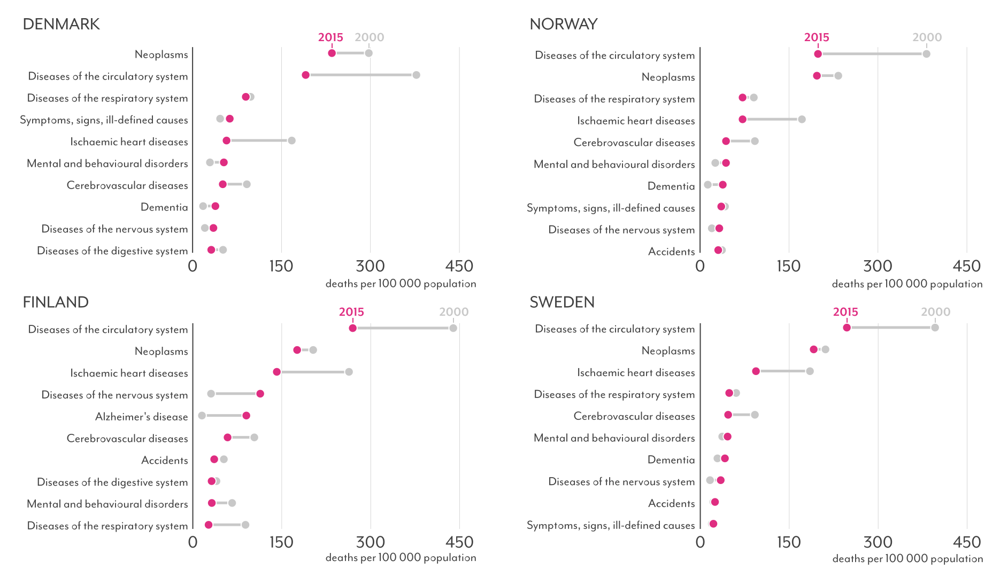
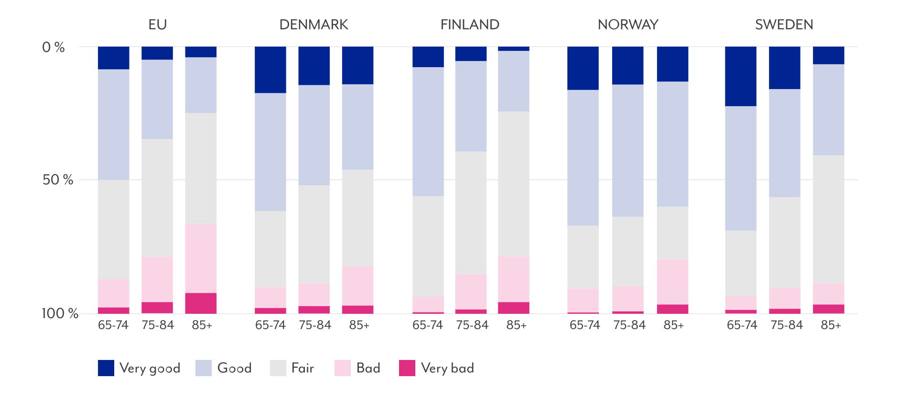
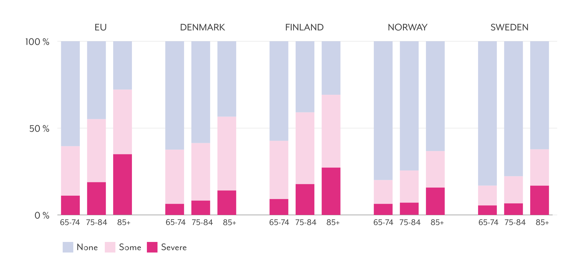
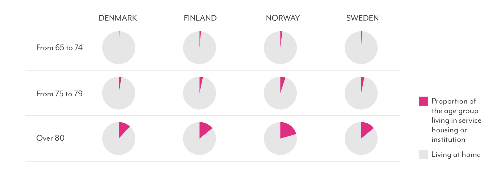
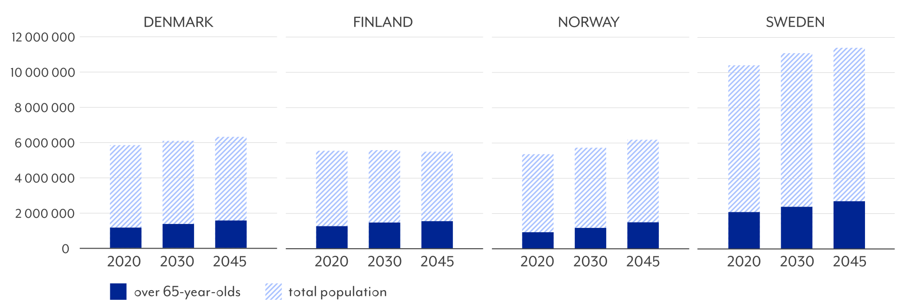
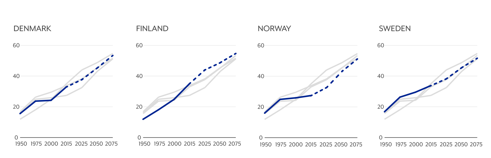

Aging population challenges
the Nordic Welfare countries in the future
Proportion of population aged 65 and over keeps growing and living longer, but they are a diverse group of people.
Generally in Nordic welfare countries life expectancy is higher than ever and mortality rates have decreased, but differences can be seen when comparing Nordic welfare countries to each other. Here those differences are here explored in relatively similar Nordic countries, referring to Denmark, Finland, Norway and Sweden.
By concentrating on the aging population and comparing selected indicators related to population, health factors, older age groups and future projections might help to understand what kind of challenges can be expected to arise in the future.
POPULATION
Population structure has changed
It is not a news that the population structure in Nordic welfare countries has been changing during the past decades - population pyramids resemble more pillar shapes than pyramids.
The proportion of elderly people of the total population has been increasing for some time. Meanwhile the proportion of young people and those in the working-age population has either remained constant or decreased. Behind lies reasons like decreasing fertility rates, improving health in general and steadily increasing life expectancy.
Population structure in 1980 and 2018
Description: (NSIs 2018).
Some variation in population structure between the countries can be detected. For example in Finland the portion of young age groups are smaller than in the other sompared countries.
Changing population structure also leads to rising average age. Norway is currently the only country of the ones compared where the average age of population is under 40 years.
Average age in 2018
HEALTH
Differences in health factors
Chronic disease, frailty, and disability tend to become more prevalent at older ages, but a population with a higher life expectancy doesn't automatically mean a healthier population or other way around. It is important to understand whether increased longevity is accompanied by more or fewer years with good health and to track changes in the health status of the population over time.
In this section health status of population aged 65 and over is inspected with indicators such as life expectancy and healthy life years in the age of 65, self-perceived health and causes of death.
Life expectancy and healthy life years in the age of 65

Description: Life expectancy and healthy life years measure the number of remaining years that
a person of a certain age is supposed to live without disability. Healthy Life Years introduces
the concept of quality of life. It is used to distinguish between years of life free of any activity
limitation and years experienced with at least one activity limitation.
(Eurostat 2017).
Comparing life expectancy to healthy life years, which is called as HLY indicator, is a one way to measure the quality of life. If expected healthy life years are increasing more rapidly than life expectancy in a population, then not only are people living longer, they are also living a greater portion of their lives free of disability. Life expectancy at the national level is highly correlated to national income indicators such as GDP per capita.
As stated, life expectancy in the Nordic countries has increased significantly, and even though women generally live longer, the difference between the life expectancy of men and of women has been reduced. When comparing population aged 65 and over, the gaps between sexes are still visible. In Finland, Norway and Sweden life expectancy and healthy life years are both slow increasing, but in Denmark healthy life years for both sexes are decreasing.
Self-perceived health, people aged 65 and over
Description: The concept is operationalized by a question onhow a person perceives his/her health in general using one of the answer categories very good/ good/ fair/ bad/ very bad. A person’s self-reported health status reflects the individual’s physiological and psychological health. (Eurostat 2018).
People aged 65 and over seem to be doing mainly well in the compared countries. Clearly over 50 % report their health 'good' or 'very good' in Denmark, Norway and Sweden. Only in Finland percentage of experienced good health stays under 50%. The proportion of people reporting their health 'bad' or 'very bad' remains relatively small.
The 10 most common causes of death, aged 65 and over
Description: Values are age-standardised death rates per 100 000. They take into account the differences in age structure of the populations, so that it is possible to compare the level of mortality across countries and over time. The causes of death are presented with codes according to the ICD-10. (Eurostat)
When inspecting the causes of death for population aged 65 and over with the change between years 2000 and 2015, a steady, declining trend can be seen in deaths caused by diseases of the circulatory system (including e.g. coronary heart disease, stroke, hypertension), neoplasms (tumors, cancer) and ischaemic heart diseases between countries. A substantial proportion of these are caused by lifestyle risk factors: alcohol, tobacco, unhealthy diet and limited physical exercise.
However, deaths caused by diseases of the nervous system, mental and behavioural disorders and dementia have become more common almost in every country. In Finland the change has been drastic in diseases of the nervous system and particulary amount of deaths caused by Alzheimer's disease.
DIVERSITY
Aged 65+ is not a homogenous group
In the previous section the health status of population aged 65 and over was inspected in general, but actually it is a diverse group. Health status is dependent on multiple factors, for example lifestyle, income or education levels and social factors.
These all create differences in health status among people aged 65 and over. Some get chronic diseases and lose their functionality while others maintain their health for long and stay active even in their later years.
Self-perceived health, age groups
Description: The concept is operationalized by a question onhow a person perceives his/her health in general using one of the answer categories very good/ good/ fair/ bad/ very bad. (Eurostat 2018).
Compared to EU average self-perceived health of population aged 65 and over in Denmark, Finland, Norway and Sweden is on a relatively good level. However, when comparing age groups from 65 to 74, from 75 to 84 and 85 and over between countries, differences are starting to show.
In Norway the percentages of self-perceived health stay steady as people get older, and almost 60 percent of over 85 year-olds perceive their health very good or good. On the contrary in Finland the percentages get rapidly smaller as people get older and only a bit over 20 percent of people ager over 85 reports their health very good or good.
Long-standing limitations in usual activities due to a health problem
Description: The limitation should have lasted for at least the past six months.
Three answer categories are possible: ‘severe’, ‘some’ or ‘none’. (Eurostat 2018).
The severe limitations due to a health problem increase significantly people over 85 in all of the countries, but all of the Nordic countries stay below EU average. In Norway and Sweden percentage of limitation free people is clearly over 50 % in all age groups, but in Denmark and Finland limitations clearly increase with aging.
The longer people can remain mobile and care for themselves, the threshold for frailty and disability is being pushed later into old age and the lower the costs for health treatment and long-term care both to families and to society.
Living in institutions or service housing, age groups
Description: No additional description available. (Nordic Statistics Database 2016).
The need for supported living increases significantly after 80 years in all of the countries. In Norway the proportion of people aged over 80 is the biggest, 20,8 percent.
FUTURE
Need for care keeps growing
National Statistic Institutions (NSIs) expect that the population of the Nordic Region will continue to grow up to 2030, but differences can be seen between the countries. For example, according to total population projection, in 2030 the total population in Finland is starting slowly to decrease, but portion of population aged 65 and over is steadily growing.
Total population projection, with portion of people aged 65 and over
Description: It is important to note that the projections published by the NSIs differ in terms of the projection periods they cover and the number of scenarios they use. They also make different assumptions about how fertility rates, mortality rates and migration numbers will develop in the future. (NSIs)
The demand for health care goods and services depend on the number of people in need of care. This depends not only on the size of the population, but also on the health status of the population, which is linked to the age structure and notably to the ratio of elderly people in the population. The reason for this is that older people often develop multi-morbidity conditions which require medical care.
One indicator measuring this is the so-called demographic old-age dependency ratio, which relates the number of individuals that are likely to be “dependent” on the support of others for their daily living – youths and the elderly – to the number of those individuals who are capable of providing such support. It is estimated that this will more than double by 2075.
Old-age dependency ratio 1950-2015 and projection 2025-2075
Description: The demographic old-age dependency ratio is defined as the number of individuals aged 65 and over per 100 people of working age defind as those aged between 20 and 64. Age-dependency ratios are a measure of the age structure of the population. They relate the number of individuals that are likely to be “dependent” on the support of others for their daily living – youths and the elderly – to the number of those individuals who are capable of providing such support. (OECD 2017)
According to Nordic Council (2018) health differences due to social status are consistent and can be detected in mortality, illness and experienced wellbeing. These differences grow while the population ages.
The main challenges are not only linked to preventing chronic diseases related to lifestyle choices and ensuring equal distribution of health services but also reacting to reducing rate of working-age persons and growing need for care. This has a profound impact on the structure of the society itself and causes a pressing need for rethinking social and health service structures in the future.